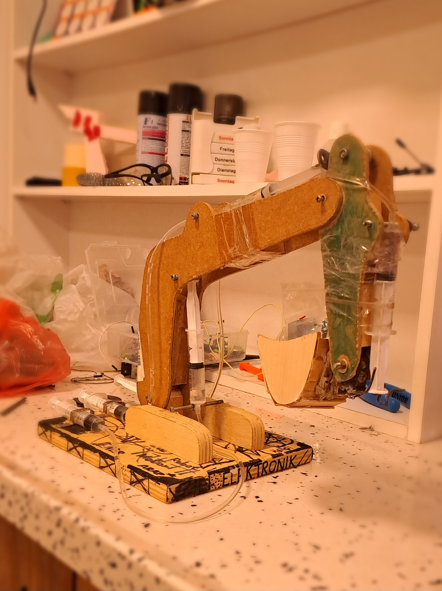
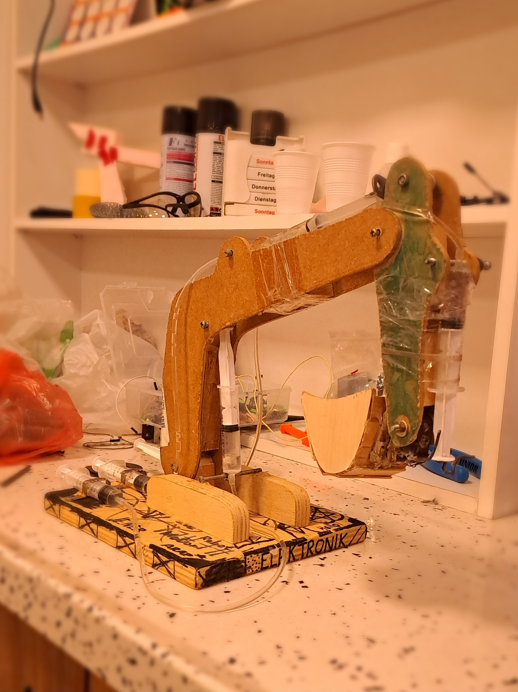

Hydraulic Excavator
I did this project, named 'Hydraulic Excavator', when I was around 11 years old. I discovered how to build this project on the YouTube platform and drew inspiration from a video by a man from India. The fact that I was able to accomplish this project at that age, and most importantly, having the desire to do so and making efforts towards it, is considered a success for me. This hydraulic excavator operates entirely on a hydro-mechanical system and incorporates a total of 6 syringes. Three of these syringes are employed to move three different parts on the excavator, while the remaining three control the syringes responsible for moving the parts. At that time, I was new to this field and did not have the basic conditions such as tools, equipment, or a workshop to complete the project. For this reason, the project may seem primitive.
 
